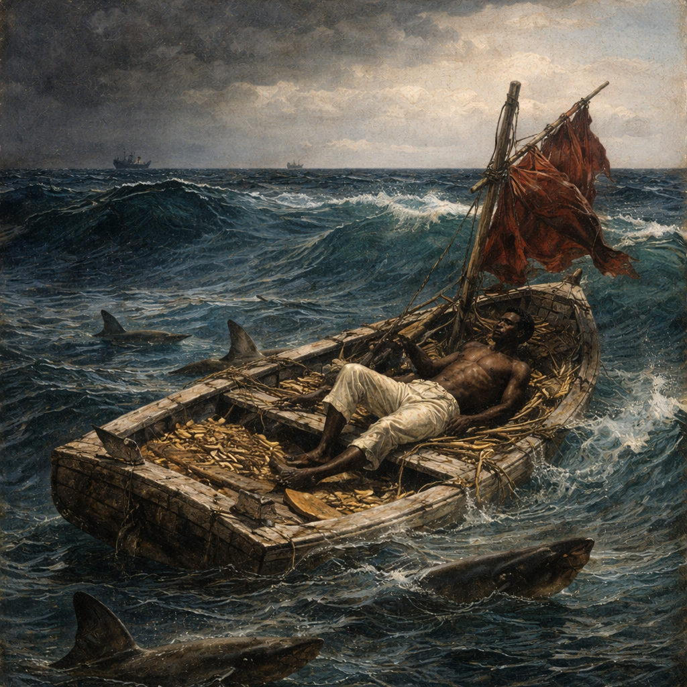

Pictura înfățișează un bărbat într-o mică barcă de pescuit fără cârmă, demontată , luptându-se împotriva valurilor agitate de furtună și a pericolelor mării, probabil în apropierea Curentului Golfului , și a fost declarația artistului pe o temă care îl interesase de mai bine de un deceniu.

Lipsit de fonduri, dar hotărât totuși să-și perfecționeze abilitățile de pictor de figuri, a devenit propriul său cel mai bun model: „Am cumpărat intenționat o oglindă suficient de bună pentru a lucra singur, din lipsă de model.” Acest tablou, care arată conștientizarea artistului față de tehnica neoimpresionistă și teoria culorilor, este unul dintre numeroasele pictate pe verso-ul unui studiu țărănesc anterior.

Originalul făcea parte din colecția de la Kunsthalle din Bremen , Germania, și a fost distrus într-un bombardament în 1942, în timpul celui de-al Doilea Război Mondial . Una dintre celelalte două versiuni ale lui Leutze se află acum la Muzeul Metropolitan de Artă din New York . Cealaltă se afla în zona de recepție a Aripii de Vest a Casei Albe din Washington, DC.